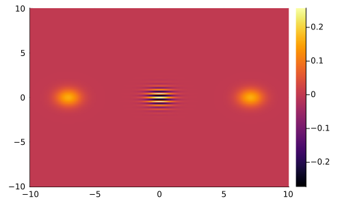
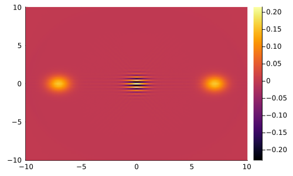

Quantum Optics example
MartaCT can also be used for Quantum Tomography as the basic filtered backprojection algorithm can be used to reconstruct a quantum state (or more precisely the Wigner function) from the measurements of the position.
First we need to import the packages for this example. We use the QuantumOptics Julia package for the definition of the quantum objects.
using MartaCT, Plots, QuantumOptics, IntervalSets, LinearAlgebraAt this point, let's construct an optical cat state:
N = 64 # density matrix dimension
α = 5
bs = FockBasis(N-1)
ν = inv(√(2*(1+exp(-2abs2(α)))))
ψ = ν * (coherentstate(bs, α) + coherentstate(bs, -α))
ρ = ψ ⊗ ψ'
@show tr(ρ)tr(ρ) = 0.999999999924824 + 0.0imWe need to get the Wigner function representation in order to compute the marginal distributions of the position.
ζ = 10
xs = linspace(-ζ..ζ, 200)
W = wigner(ρ, xs, xs) |> permutedims
δW = 4ζ^2 / length(W)
@show sum(W) * δW
heatmap(xs, xs, W)sum(W) * δW = 0.9900127164940782
The marginal distributions can be computed as a Radon transform of the Wigner function:
ϕs = linspace(ORI(0..2π), 800)
marg = radon(W, xs, ϕs, RadonSquare())
@show sum(marg[:,1])
heatmap(ϕs, xs, marg)sum(marg[:, 1]) = 0.999987592731576Now we can employ the standard FBP algorithm to recover the Wigner distribution:
Wrec = iradon(marg, xs, xs, FBPFFTSquare())
heatmap(xs, xs, Wrec)